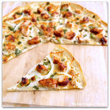

DOCTYPE html>
Thin Pizza Crust
Thin Pizza Crust

Description
A thin crust that can be used to make any pizza you can imagine. From a basic pepperoni to BBQ chicken, this crust is versatile and delicious.
Ingredients
- 2tsp dry yeast
- 1/2tsp white sugar
- 1 1/2 cups water, 110-115°F
- 4cups flour
- 1tsp salt
- extra seasonings to taste, I recommend onion and garlic powder
Steps
- proof yeast with sugar and warm water for 10-15 minutes
- whisk seasonings and flour together in a large bowl
- slowly add yeast mixture to flour and combine
- knead dough together for 10 minutes until smooth and holds together well
- gently roll and stretch to fit your pizza pan, or divide into smaller personal pizzas
- top with sauce and toppings, let your imagination run wild, or stay classic, it's your choice